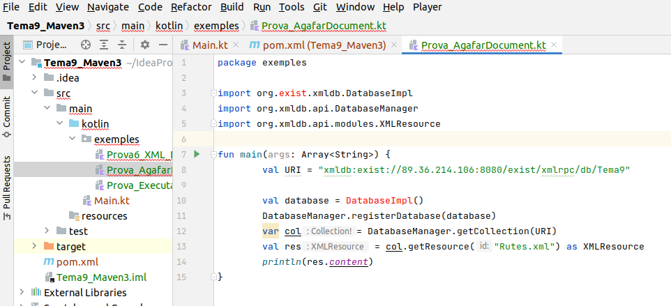
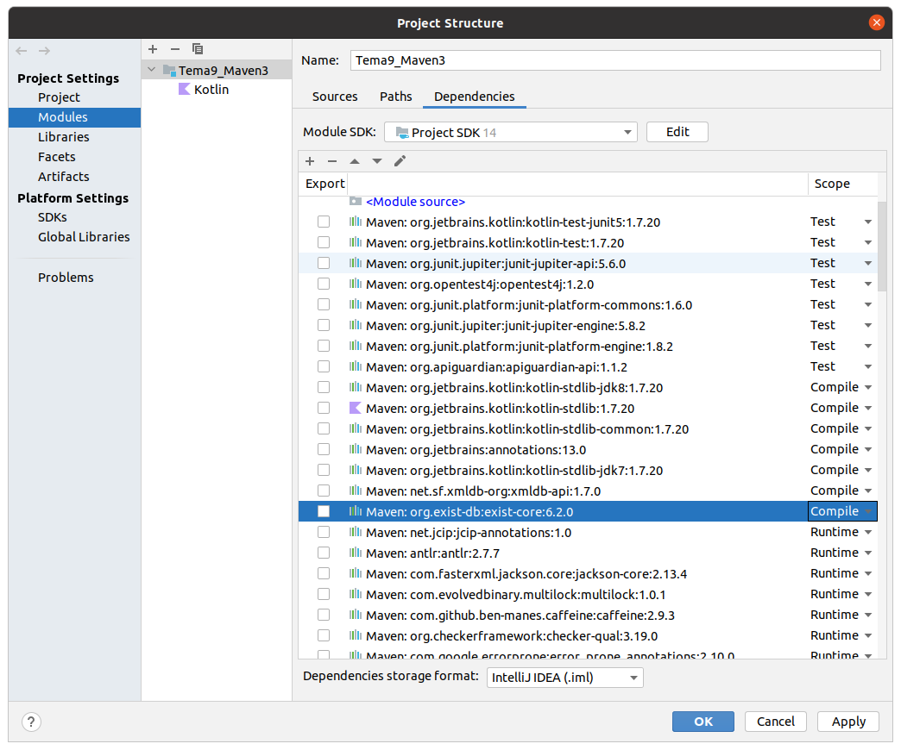

7.2 - API XML:DB
Únicament a mode d'exemple posarem alguns exemples d'utilització de l'altra API comentada anteriorment: XML:DB.
Tenim documentació i exemples en la mateix a pàgina de eXist.db, actualitzada.
https://exist-db.org/exist/apps/doc/devguide_xmldb
Per tant sembla que estan apostant per aquesta via. De tota manera, com comprovarem, resulta un poc incòmoda, per això no insistirem i posarem només alguns exemples.
En compte de buscar el driver jar d'aquesta API, construirem un projecte Maven, i posarem les dependències que ens diu aquesta pàgina per a que es decarregue Maven tot el necessari.
Per tant, construïm un nou projecte, per exemple amb el nom Tema9_Maven, i en el fitxer pom.xml afegim aquestes dependències en la secció de <dependencies>:
<dependency>
<groupId>net.sf.xmldb-org</groupId>
<artifactId>xmldb-api</artifactId>
<version>1.7.0</version>
</dependency>
<dependency>
<groupId>org.exist-db</groupId>
<artifactId>exist-core</artifactId>
<version>6.2.0</version>
<scope>runtime</scope>
</dependency>Veurem 3 exemples, trets de la pàgina anterior i acoplats a les nostres Bases de Dades.
Agafar un document
Per a poder connectar al servidor utilitzarem una URI, amb el protocol xmldb, el servidor i la ruta fins on tenim el document. Si no posem tota la ruta, després quan anem a pel document amb getResource() completem la ruta fins al document.
val URI = "xmldb:exist://localhost:8080/exist/xmlrpc/db/Tema9"Evidentment podem substituir localhost per l'adreça del servidor
En el programa, registrarem una Database (classe proporcionada per la API) i posteriorment agafarem una col·lecció utilitzant la URI. Només quedarà anar a pel document amb getResource() de la col·lecció.
Copieu-vos el següent codi a un fitxer anomentat Prova_XML_DB_AgafarDocument.kt:
import org.exist.xmldb.DatabaseImpl
import org.xmldb.api.DatabaseManager
import org.xmldb.api.modules.XMLResource
fun main(args: Array<String>) {
val URI = "xmldb:exist://localhost:8080/exist/xmlrpc/db/Tema9"
val database = DatabaseImpl()
DatabaseManager.registerDatabase(database)
var col= DatabaseManager.getCollection(URI)
val res = col.getResource("Rutes.xml") as XMLResource
println(res.content)
}Nota
Podria donar-se el cas que el projecte Maven no estiga ben configurat i que done error en algunes classes de les importades per Maven:

Es pot solucionar fàcilment anant a Project structure, buscar la llibreria de eXist-db importada i assegurar-nos que està amb l'opció Compile (si està en Runtime és quan no ho troba):

Executar una sentència XQuery
Per a executar una sentència XQuery, en aquesta ocasió hem d'utilitzar un objecte XQueryService a partir de la col·lecció, en el qual compilarem i executarem la sentència.
El resultat és un ResourceSet que lamentablement no es pot utilitzar amb un foreach, sinó que s'ha d'utilitzar un iterador
Copieu-vos el següent codi (equivalent a Prova1_XQJ.kt del projecte de XQJ) en un fitxer anomenat Prova_XML_DB_ExecutarXQuery.kt:
import org.exist.xmldb.DatabaseImpl
import org.xmldb.api.DatabaseManager
import org.xmldb.api.base.*
import org.xmldb.api.modules.XQueryService
fun main(args: Array<String>) {
val URI = "xmldb:exist://localhost:8080/exist/xmlrpc/db/Tema9"
DatabaseManager.registerDatabase(DatabaseImpl())
var col= DatabaseManager.getCollection(URI)
val xqs = col.getService("XQueryService", "1.0") as XQueryService
val result = xqs.execute(xqs.compile("for \$alumne in doc(\"/db/Tema9/classe.xml\")//alumne order by \$alumne/cognoms return \$alumne"))
val it = result.iterator
while (it.hasMoreResources()) {
val res = it.nextResource()
println(res.content)
}
}Processar el resultat
Per a poder passar còmodament un resultat a l'estructura DOM i a partir d'aquest moment utilitzar tot el que vam veure en el tema 3, ens anirà bé convertir el Resource a XMLResource, que ens aportarà el mètode getContentAsDOM().
Copieu-vos el següent codi (equivalent a Prova6_XQJ.kt del projecte de XQJ) en un fitxer anomenat Prova6_XML_DB.kt:
import org.exist.xmldb.DatabaseImpl
import org.w3c.dom.Element
import org.xmldb.api.DatabaseManager
import org.xmldb.api.modules.XQueryService
import org.xmldb.api.modules.XMLResource
fun main(args: Array<String>) {
val URI = "xmldb:exist://localhost:8080/exist/xmlrpc/db"
DatabaseManager.registerDatabase(DatabaseImpl())
var col= DatabaseManager.getCollection(URI)
val xqs = col.getService("XQueryService", "3.0") as XQueryService
val result = xqs.execute(xqs.compile("for \$alumne in doc(\"Tema9/classe.xml\")//alumne order by \$alumne/cognoms return \$alumne"))
val i = result.iterator
while (i.hasMoreResources()) {
val res = i.nextResource() as XMLResource
val el = res.contentAsDOM as Element
print(el.getElementsByTagName("nom").item(0).getFirstChild().getNodeValue() + " ")
print(el.getElementsByTagName("cognoms").item(0).getFirstChild().getNodeValue() + ": ")
println(el.getElementsByTagName("nota").item(0).getFirstChild().getNodeValue())
}
}Llicenciat sota la Llicència Creative Commons Reconeixement NoComercial CompartirIgual 2.5